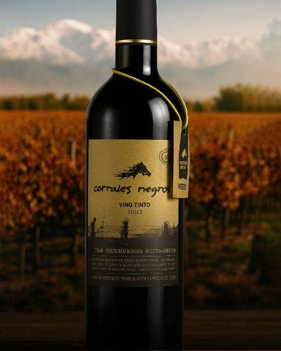

El nombre de esta bodega conserva la memoria de un antiguo paraje vinculado con los caminos que atravesaban la zona desde la época colonial. Corrales Negros formaba parte de la ruta de las carretas que, después de cruzar el río Mendoza, continuaban hacia el este en dirección a Buenos Aires. Allí existió una posta donde viajeros y tropas podían descansar, abastecerse de agua y alimentos y realizar el recambio de animales.
El origen del nombre “Corrales Negros” conserva cierto misterio. Algunos relatos sostienen que proviene de antiguos corrales que habrían sido incendiados, mientras que otros señalan que sus maderas fueron cubiertas con brea para protegerlas. Más allá de las distintas versiones, la denominación perduró en la memoria local y permite reconocer la importancia histórica de este sector como lugar de paso.
Seguramente capta la atención el nombre de este establecimiento. Una denominación con historia, relacionada con la vida del General Don José de San Martín y la gesta libertadora. Era el nombre de un paraje que formaba parte del camino de las carretas hacia el Este del río Mendoza en dirección a Buenos Aires. “Corrales Negros”, se debe a los antiguos corrales de la posta que hubo en ese sitio y que era un paso obligado también en el camino hacia Chile. En las postas los viajeros se abastecían de agua y comida, se hospedaban y aseaban. También descansaban las tropas y hacían el recambio.
Algunos relatos señalan que los corrales fueron incinerados, otros sostienen que fueron pintados con brea para su protección. De ahí que la zona empezó a conocerse como los corrales negros.
La bodega data de la década de 1960 y fue construida por el Sr. Cremaschi, inmigrante italiano. Hacia el año 1985 quedó a cargo de Ernesto Cónsoli, quien luego la heredó a su hijo, también llamado Ernesto. Actualmente continúa al frente de la empresa junto con su esposa, Lucía. Se dedican a la elaboración y venta de vinos fraccionados.
La memoria del lugar también está vinculada con la Virgen de la Luz. Según relatos locales, en las proximidades habría existido una antigua ermita con una imagen de esta advocación mariana, a la que la tradición vincula con el general José de San Martín. Se cuenta que el Libertador acudía allí a rezar antes de emprender sus viajes. Tras el terremoto de 1861, la ermita habría quedado destruida y la imagen fue trasladada a la Capilla Nuestra Señora de la Luz, frente a la Plaza Mercedes Tomasa de San Martín, donde se conserva actualmente.
La Sra. Lucía comenta que en esta zona existía una ermita (que aún no se sabe con precisión su proveniencia) con la Virgen de la Luz, de la cual el Gral. José de San Martín era devoto. Se dice que antes de sus viajes la visitaba y rezaba. Sin embargo, luego del terremoto de 1861 se derrumbó y fue trasladada a la Capilla Nuestra Señora de la Luz, frente a la Plaza Mercedes Tomasa de San Martín en Los Barriales. Actualmente sigue allí y es reconocida por ser la Virgen que protege a las mujeres embarazadas y los viajeros.
Si bien las inmediaciones de la bodega se encuentran paños de vides, la zona se caracteriza por una variedad de cultivos, con parcelas de horticultura y olivicultura, que aprovechan la mayor presencia de humedad del suelo producto de su cercanía con el arroyo Claro.

Facebook: https://www.facebook.com/corralesnegros